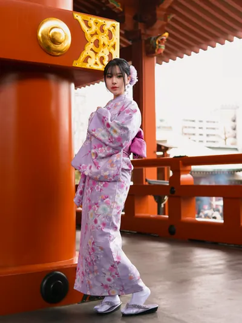

關於About
我是 Robin，從事專業攝影十年。現在大部分的工作，是為來日本旅行的人拍照。情侶、家庭、旅行團，還有很多不想把相機交給陌生人的獨自旅行者。
I'm Robin. I've been shooting professionally for ten years, and these days most of my work is with people who are visiting Japan. Couples, families, tour groups, and a lot of solo travelers who’d rather not hand their camera to a stranger.
拍攝的過程大多是在走路。我會安排路線、看光線，需要的時候也會告訴你站在哪裡，但目標是拍出你真的在那裡的樣子，而不是對著背景擺姿勢。每次拍攝都有會說英語的助理同行，隨時可以討論當天的安排。
A session is mostly walking. I'll suggest a route, watch the light, and tell you where to stand when it helps, but the aim is pictures that look like you were actually there rather than posed against a backdrop. An English-speaking assistant comes along on every shoot, so there’s always someone to talk the plan through with.
旅拍之外，我也為品牌拍攝商業產品照。如果你需要這類服務，用同一個信箱聯絡就可以，告訴我產品是什麼、照片要用在哪裡。
Alongside travel work I shoot commercial product photography for brands. If that's what you need, the same email works. Tell me what the product is and what the images are for.
